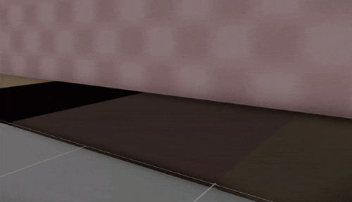
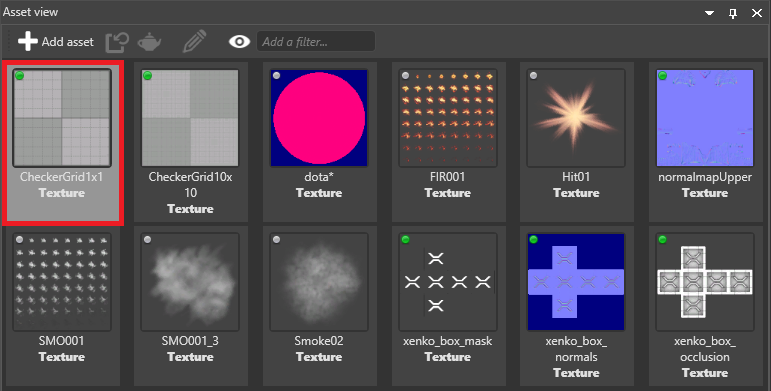

Streaming
Warning
Приносим свои извинения за неудобства. Для этой страницы нет перевода на русский язык. Она будет отображаться на английском языке.
Beginner Artist Programmer
When you stream textures, Stride only loads them when they're needed. This significantly decreases the time it takes to load a game or scene, uses less memory, and makes your game easier to scale.
Note
Currently, only textures can be streamed.
How Stride streams textures
Instead of loading a texture when Stride loads the scene (with all its mipmaps), Stride only loads it when it's used (eg a model using the texture is onscreen).
When the texture is no longer needed (ie no objects that use the texture are onscreen), Stride unloads it.
Currently, there's no loading priority for textures. For example, Stride doesn't load textures based on distance; instead, Stride loads them all in sequence.
Using streaming with mipmaps
If mipmaps (different-resolution versions of textures displayed at different distances) are enabled in the texture properties, the lower-resolution mipmaps load first, as they're smaller in size. The gif below shows this process happening in slow motion.

In most situations, the process is very quick. We recommend you enable mipmaps for streaming as it means lower-resolution versions of textures act as placeholders until the higher-quality versions can load, reducing pop-in.
When not to use streaming
Streaming is enabled by default for all textures. You might want to disable streaming on important textures you always want to display immediately and in high quality, such as:
textures on player models
textures used in particles (particles often have a short lifespan, so might disappear before the texture loads)
Enable or disable streaming on a texture
In the Asset View, select the texture.

In the Property Grid, under Format, use the Stream check box.

Global streaming settings
You can access the global streaming settings in the Game Settings asset. These settings apply to all textures that have streaming enabled.
For instructions about how to access the global streaming settings, see the Game Settings page.
Properties

| Property | Description |
|---|---|
| Streaming | Enable streaming |
| Update interval | How frequently Stride updates the streaming. Smaller intervals mean the streaming system reacts faster, but use more CPU and cause more memory fluctuations. |
| Max resources per update | The maximum number of textures loaded or unloaded per streaming update. Higher numbers reduce pop-in but might slow down the framerate. |
| Resource timeout (ms) | How long resources stay loaded after they're no longer used (when the memory budget is exceeded) |
| Memory budget (in MB) | When the memory used by streaming exceeds this budget, Stride unloads unused textures. You can increase this to keep more textures loaded when you have memory to spare, and vice versa. |
Access the streaming manager in code
Use Streaming.
For example, to disable streaming globally, use:
Streaming.EnableStreaming = false;
To start streaming a texture:
Streaming.StreamResources(myTexture);
To disable streaming at load time:
var texture = Content.Load<Texture>("myTexture", ContentManagerLoaderSettings.StreamingDisabled);
Options
There are three StreamingOptions:
The
KeepLoadedoption keeps the texture in memory even when the memory budget is exceeded.If mipmaps are enabled, the
ForceHighestQualityoption loads only the highest-quality version of the texture.The
KeepLoadedoption keeps the texture in memory even when it's not used.
For example:
var myOptions = new StreamingOptions() { KeepLoaded = true };
Streaming.StreamResources(myTexture, myOptions);
To change the StreamingOptions at runtime, use SetResourceStreamingOptions. For example:
var myNewOptions = new StreamingOptions() { KeepLoaded = false };
Streaming.SetResourceStreamingOptions(myTexture, myNewOptions);